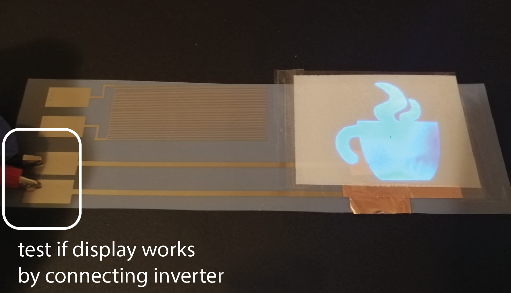

6.810 Engineering Interactive Technologies (fall 2021)
Lab 7: Inkjet Printed Temperature Sensor
In this lab, we will first create the digital design of an ink-jet printed temperature sensor to sense the heat of the mug when a hot drink is poured in. We will then create the overall circuit design for the mug, which contains the temperature sensor and connector pads for the EL display. Finally, we will print out the circuit design on the inkjet printer. In the next lab, we will then assemble everything into the final mug and write the temperature sensing code.
Don't forget to bring your EL display:
Please don't forget to bring your EL display for this and the next labs in this series.
Please don't forget to bring your EL display for this and the next labs in this series.


Steps:
- Understand Temperature Sensing
- Understand the Shape of a Temperature Sensor
- Generate Temperature Sensor Using Processing Script
- Integrate Temperature Sensor and EL Display Circuit
- Inkjet Print Circuit
- Attach Copper Tape to the Connector Pads
- Attach Display to Printed Circuit
- Laminate Printed Circuit
Deliverables
At the end of the lab, upload to your student google drive:- the Processing code (.pde) to generate the temperature sensor
- the Adobe Illustrator file (.pdf) with the completed circuit design
- 1 photo (.jpg or .png) of your inkjet printed temperature sensor
Help us Improve Class Materials for Lab7:
Please let us know if you had any trouble with the circuit drawing or if anything was confusing in the write up.
You can add your comments here.
Please let us know if you had any trouble with the circuit drawing or if anything was confusing in the write up.
You can add your comments here.
(1) Understand Temperature Sensing
You will make your owntemperature sensor from scratch using conductive inkjet printing. But why can conductive traces be used to sense temperature?Resistance Changes with Temperature: Conductive traces can be used to sense temperature because their
resistance changes with changes in temperature, a property other metals share as well. This phenomenon can be understood by picturing how electrons move in a conductive material from one pol to the other. The conductive material is filled with atoms and molecules that bounce around. Electrons trying to move through the conductive material may collide with the atoms and molecules, and as a result, the electrons may be deflected or scattered around in the material. With higher temperatures, the atoms and molecules bounce around more and scatter electrons stronger, which leads to a higher resistance.Below, you see the
resistivity change of silver, copper, and gold under different temperatures. Note, that these functions are not linear overall, but can be approximated with a linear function for temperature changes between 0C - 100C with only a small error.Formula for Computing Overall Resistance at a Certain Temperature: As mentioned above, for temperature changes between 0C - 100C, the resistance of our conductive traces varies linearly with temperature. We can describe the
resistance at a certain temperature with the following equation:\[ R_{temp} = R_{Ref}(1+\alpha (T - T_{Ref})) \] R_{temp}: is the resistance at the current temperature T
R_{Ref}: is the resistance at a given reference temperature T_{Ref}
alpha: is the temperature coefficient of the conductive material in our case the
silver inkDetermining alpha: While the
temperature coefficient alpha is known for metals, such as pure silver, our silver ink is a special mixture that has a different temperature coefficient. Since we cannot measure alpha directly, we will instead measure the resistance of our conductive traces at two temperatures (e.g., the conductive traces at room temperature of 20C, and when boiling water is poured into the mug at 100C) and measure the resulting resistances. We can then fill out the formula and calculate the temperature coefficient alpha of our silver ink traces. Before we can take those measurements, we first have to create our temperature sensor. Let's start with this. (2) Understand the Shape of a Temperature Sensor
Above we discussed how conductive traces can be used to sense temperature by measuring their resistance. The next question that arises iswhat area should the trace cover and what shape should it have? Area of the Temperature Sensor: The temperature sensor that we wrap around the coffee mug should
measure temperature over a large area of the mug to make sure that we get a good reading even when the mug is only half full. This also helps us to reduce the effect that a user's warm fingers have on an empty mug since those would only locally heat up the mug but do not generate enough heat over a larger area to change the temperature reading significantly. We will cover a 70mm x 20mm large area on the mug with silver traces (see image below, no need to draw something yet, we will do this in the next section).Shape of the Temperature Sensor (Horse Shoe Pattern): A classic method to create a long wire on a small area is to design it in a
horse shoe pattern, which looks like the image below.In the next step, you will write a program to automatically generate a temperature sensor for a given size.
(3) Generate Temperature Sensor Using Processing Script
Since drawing a horse shoe pattern manually is quite the pain, let's leverage ourcomputational design capabilities in Processing. Write a Processing Script that generates a temperature sensor layout of variable width and height. You may want to reuse some code from pset1 for this script.Create User Input Fields: There are 4 parameters necessary to generate this horse shoe pattern:
sensor width, sensor height, trace thickness, and distance between traces. Your user interface should allow the user to change these values using UI elements and then generate a matching sensor layout.Default values for UI: The default values in your program to generate your temperature sensor should be:
Width of temperature sensor= 70mmHeight of temperature sensor= 20mmWire thickness= 0.3mmVertical Spacing between silver traces= 0.5mm
horizontal lines of the given thickness and connect them with vertical lines on alternating sides. Make sure that the traces start and end on the same side.Export Temperature Sensor as PDF: Output a
.pdf that contains the temperature sensor ready for inkjet printing. The pdf should be letter sized.Check Temperature Sensor in Illustrator: Open your temperature sensor pdf in
Adobe Illustrator and measure to confirm that the default values are set correctly, i.e. width of temperature sensor = 70mm, height of temperature sensor = 20mm, wire thickness = 0.3mm, and vertical spacing between silver traces = 0.5mm.
(4) Integrate Temperature Sensor and EL Display Circuit
Now that you have the temperature sensor, it's time to extend the circuit to also include theEL display, whose brightness we want to control based on temperature changes.Download Overall Circuit File: Below, you see an image of the mug for reference and the
overall circuit layout that fits onto the mug, which has all the elements you need for the circuit. Download the overall circuit file from here. It contains a rectangle that shows you how much space you have on the mug (width: 170mm, height: 50mm).Add Temperature Sensor to Circuit: Open your
temperature sensor .pdf in Adobe Illustrator. Copy the temperature sensor into your overall circuit file. The imported temperature sensor should be placed near the mug's handle as shown above.Add two Connector Pads to Temperature Sensor: Draw
two connector pads (each size: 30mm x 5mm) and connect them with two wires (thickness: 1mm) to the temperature sensor start and end of the horse shoe pattern. We will later connect our microcontroller to those connector pads.Draw a placeholder for your EL display:
Measure the size of your EL display and draw a placeholder rectangle in your overall circuit design as shown in the image above. There should be at least a 10mm gap between the temperature sensor and the edge of your EL display to ensure they do not touch each other.Draw a placeholder for copper flaps: Also draw
two placeholders for the copper connectors on your EL display. One connector is the copper flap that we attached to the copper sprayed area, the other connector is the copper tape at the bottom of the display. Draw their position accurately into your circuit drawing. I don't see the copper connector place holders, where are they?Draw two Connector Pads to EL Display: Next, draw an additional two connector pads (each size:
30mm x 5mm) and connect them with two wires (thickness: 2mm) to the EL display copper flap and copper stripe. There should be at least a distance of 3cm between the wires at the location where they connect to the EL display to avoid short circuits. The position of the wires is essential, if they are placed too high or too low they will not make a connection to your EL display since they will not touch the copper flap and copper tape.Check your Drawing Before Printing: Once you are done, double check one more time:
Wires to Display:The spacing between your display wires matches the distance between the copper flap and copper tape onYOUR display.Height of your circuit:The bounding rectangle of your entire circuit is within the maximum heihgt and width of 170mm x 50mm.No Overlap of Temperature Sensor and Display:The temperature sensor does not overlap with the display, there is a gap of at least 1cm between them.Trace Width Display:The trace width to your display is 2mm.Size of Connector Pads:The connector pads are 30mm x 5mm.
(5) Inkjet Print Circuit
Once you are done with your circuit design, please put it in yourgoogle drive and let us know on slack that you are ready for inkjet printing.Inkjet Print Circuit: Once we confirmed that everything looks good, go ahead and
inkjet print your circuit on white inkjet paper sheets.Check Resistance of your Temperature Sensor: Once your print is done, check if the temperature sensor is printed properly. Use a
multimeter and hold its two electrodes on the two corresponding connector pads, you should read a value of around a few 100 Ohms to 1 kOhm.(6) Attach Copper Tape to the Connector Pads
In one of the later steps, we willsolder jumper wires to the connector pads of your printed circuit. However, soldering directly on paper is not a good idea. The paper will burn and destroy the printed silver at the same time. To address this issue, we will glue a piece of copper tape over the connector pads. This allows us to solder wires to our printed circuit.Cut 4 copper tape pieces: The copper tape should
fit the size of the printed connector pads, which are 30mm long. Cut 4 pieces that are 30mm long.Important: Get yourself a pair of glooves before you start working on the printed circuit. The silver traces might not be fully dry yet and you could rub off some silver when applying the copper tape on the connector pads.
Glue copper tape on connector pads: Check the image below for how your circuit should look like after you
applied the copper tape to the connector pads.
(7) Attach Display to Printed Circuit
Now, it's time toattach your sprayed display to the printed circuit.Attach Copper Tape to Circuit for EL Display Connections: Take a roll of
copper tape and cut of two 6cm long pieces. Take one of the copper strips and attach half of it onto one of the wires that leads to the display, bend it over so that the adhesive side faces upwards (see images below). Repeat this with the other copper strip on the second wire. Make sure that the two copper stripes don't connect to each other and have a save distance of at least 1cm.

Attach your Display to Copper Tape: Next,
attach your display onto the adhesive side of the bend-over copper stripes. Make sure that one copper strip connects only to the copper tape on the display and the other copper strip only connects to the copper flap on the sprayed copper layer. no copper flap?Test Display Connection: Let's test if the connection between the display and the printed wires is working. Take your
inverter circuit and connect it to the two connector pads that lead to the display, then check if the display turns on/off. If you don't remember how to control your inverter circuit, look back at lab 6. Remember: do not touch the display or any part of the circuit while the inverter is plugged in. If your display lights up, you can continue.
Tape Down Edges of Display with Transparent Tape: Once, you verified that everything works, you can
tape the display on its edges onto the circuit sheet using transparent scotch tape.
Apply a stripe of tape on the left and the right edge of your display.

(8) Laminate Printed Circuit
A mug often gets in contact withliquids that could damage the printed circuit. Because of that, we will laminate the circuit similar to how you did it for the music card to protect it from moisture, such as coffee or water. Cut out the circuit: Before you can laminate it, you have to
cut out the circuit. The overall size should be close to 170mm x 50mm. Make sure that you cut around the display and that you don't cut off part of the connector pads.Place your Circuit between two Lamination Sheets: Take a lamination sheet, insert your circuit between the two layers, and push it up to the side that is glued together. Make sure that the
connector pads stick out of the lamination sheets by 1cm (see image below). We will later solder onto these pads. Thus, they should still be exposed after lamination.Cut Lamination Sheet to Fit Mug Sensor: When you cut the lamination sheet around the circuit, make sure that you
leave a frame of about 1cm width around the mug sensor. When laminating everything, this frame will glue together and encapsulate your mug sensor. shouldn't we laminate first and then cut it out?Put your Mug Sensor in the Laminator: Finally,
insert the circuit into the laminator with the glued together side first. Deliverables
At the end of the lab, upload to your student google drive:- the Processing code (.pde) to generate the temperature sensor
- the Adobe Illustrator file (.pdf) with the completed circuit design
- 1 photo (.jpg or .png) of your inkjet printed temperature sensor